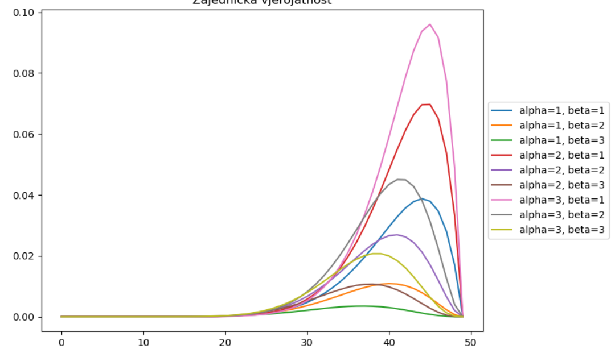

3.e) Proučite funkciju cov te izračunajte ML-procjenu za kovarijacijsku matricu za skup Iris. Usporedite pristranu i nepristranu procjenu. Pokažite da se razlika (srednja apsolutna i kvadratna) smanjuje s brojem primjera (npr. isprobajte za 𝑁/4 i 𝑁/2 i 𝑁 primjera).
Razlika čega?
Dragi prijatelj strojnog učenja Ja sam to shvatio kao razlika kovarijacijskih matrica i onda samo racunas sumu svih elemenata u modulu i sumu svih elemenata kvadrirano
Jel imao itko ovaj problem?
pingvin koristi google collab i izvrsi naredbu !pip install pgmpy
pingvin Kada upalis anacondu nemoj otvoriti neki file, imas gore desno new -> terminal i upisi conda install -c ankurankan pgmpy source: https://pypi.org/project/pgmpy/ provjerio i radi
Sgt. Forge pocelo mi je to skidat preko gigu podataka, ocekivano?
u 2.b), koja je formula za ovu drugu vjerojatnost u umnosku? Prva je ocito funkcija izlgednosti s pocetka, ali gdje da nadem ovu P(mu|a,b)?
branimir1999 mozes koristi beta.pdf(mi, a, b) isto kao u a) dijelu zadatka
snowman Ovo me zbunjuje: ja pretpostavljam da nesto krivo shvacam, ali ne znam kako beta.pdf(mu,a,b) moze biti jednako tom izrazu?
sheriffHorsey Meni konacni izlaz bude matrica s jednim redom i cetiri stupca koji predstavljaju znacajke, a trebao bi biti jedan broj pa mi nije jasno? Uzmem podskup dataseta prema trazenim brojevima primjera, stavim podskup u cov s rowvar = False zastavicom i onda oduzmem pristranu i nepristranu matricu te podijelim s njihovim brojem primjerka. Time dobivam gore navedeni konacni izlaz. Trebamo li naci mean i od tih konacnih znacajki ili nesto krivo radim?
mislim da taj pgmpy uopće nije ni potreban za ovaj labos
branimir1999 Da nisam to spomenuo, ja sam radio mean svega toga
Jel bi razlika u 3.e) trebala biti veca s vise primjera ili obrnuto?
Zero manja, razlika ti dolazi od onog faktora: pristrani procjenitelj se mnozi s \frac{1}{N}, a nepristrani s \frac{1}{N-1}. Kako N raste razlika izmedju N i N-1 postaje zanemariva
Kako vam izgleda graf u 2.b)?
maraska meni ovako, ne znam jel to ok 
Daeyarn Možda imam niski iq, ali zašto su ti na x-osi ovi brojevi? Nije mu varijabla po kojoj funkcije idu?
koji vam je ispis u 3.c i 3.e?
wesley 3.c)
Za primjere označene sa 2.
bodNaUvidima [obrisani korisnik] meni je isto ovako ispalo za primjere s oznakom 2
e kako korisite ovaj norm u 3.b)?
marvin iz dretve od prošle godine za ovaj labos: sum(norm(mi, sigma).logpdf(x))
sum(norm(mi, sigma).logpdf(x))